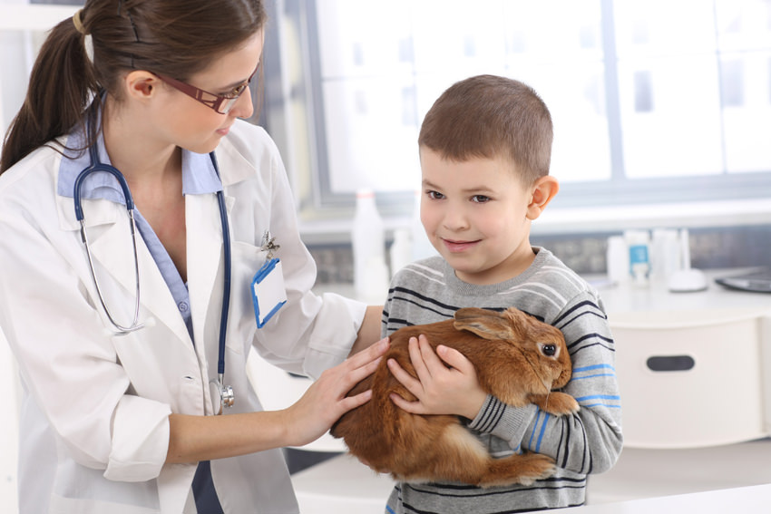
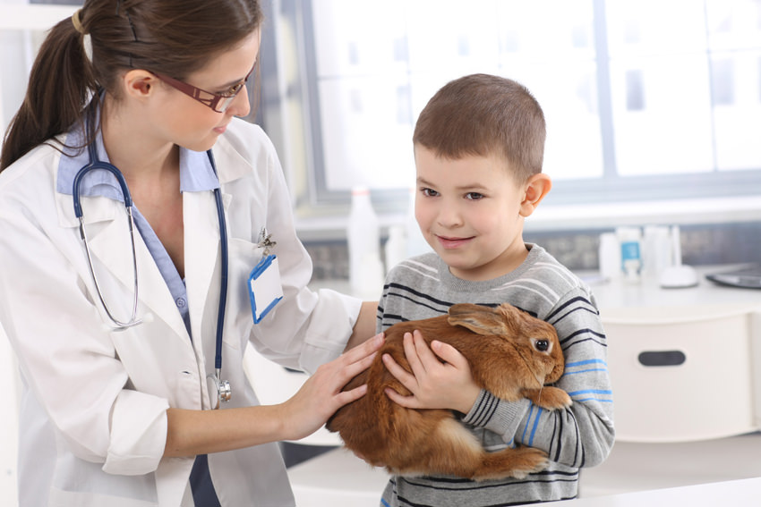

Our team is..
Our team is about the helping our friends. We care about them.One of the greatest benefits of a career in veterinary medicine, such as a veterinary pathologist, is the chance to promote the health and welfare of your patients. You also have the ability to relieve the suffering of animals that have experienced traumatic injuries or chronic illnesses. Even routine spay and neuter surgeries help the animals in your community by reducing pet overpopulation.
 
